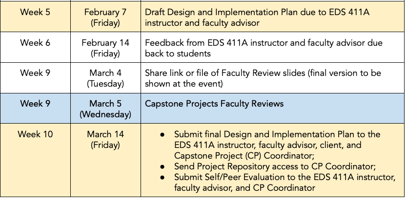

Week 5
Materials
📗 Resolving A Conflict slides - Dr. David Rasch, UCSB Associate Ombuds
Schedule
1:00 - 1:10: Questions, check-in & upcoming assignments
1:10 - 2:30: Resolving a Conflict Workshop - Dr. David Rasch, UCSB Associate Ombuds
2:30 - 2:35: BREAK
2:35 - 3:20: Testing brainstorm
3:20 - 3:25: BREAK
3:25 - 4:00: MEDS faculty reviews watch party
Upcoming capstone deadlines

To do by next week
📥 Submit complete DIP draft
Due by 5pm on Friday 2/7
Incorporate the feedback you’ve received so far.
Email your advisor and me with a link to you google doc. Be professional and remind them of the due date for feedback next Friday.
Make the most out of this revision: it’s great to request specific feedback from your advisor! Is there any section you’d particularly like their input on? Let them know in your message. You can also tag us in comments inside your document.
Page limit: The Design and Implementation plan should be limited to 5-10 single-spaced pages of written text. This page limit does not include the title page, table of contents, budget and justification, or references cited.
📈 Prepare a flash talk (last one!)
Prepare 4 slides covering:
- Slide 1: A cover slide
- Slide 2: Brief overview of project’s products and deliverables (don’t include academic ones) and which ones you are currently working on.
- Slide 3: An update or two on the progress you’ve made on the deliverables. Include code, graphs, or figures your team has generated. Explain how this work will integrate with or is a step towards your deliverable.
- Slide 4: Next steps.
Pick a person or two who are ready to do a 3 minute presentation next class. Add slides to Week 6 - Flash talks.
Focus on:
- Switching “Shiny app” for “interactive web app” or “dashboard” (all documents)
- Avoiding big blocks of text + big enough font size
- Clearly explaining the figures you feature and adding references and provenance where appropriate. Check how to talk about your figures.
- Project your voice + LOOK AT YOUR AUDIENCE (i.e. don’t read off your slides all the time)
- Ask fo questions from the audience at the end
- Practice and time it!
💬 Schedule 1-1 meeting
We’ll have 1-1 in-person meetings February 6-12 to check how everything is going. Please book a 10-minute slot to meet on my calendar. Meetings will take place at my office BH 4424.
🤔 Discuss with team
Context: your Team Management Plan + DIP draft submissions + flashtalks, and the feedback you received.
Add this item to the agenda for your next team meeting:
Discuss what went well and and what could be better:
- ✨How will your team improve?✨
- Is your team delivering high-quality, timely work?
- Do you need to re-read the capstone guidelines?
- Should you seek more feedback or guidance from your client/advisor?
- Should you be more proactive in proposing solutions or product details?
- Does your team need to share work earlier so everyone can revise?
- Do you need to establish new expectations or ground rules in your team management plan?